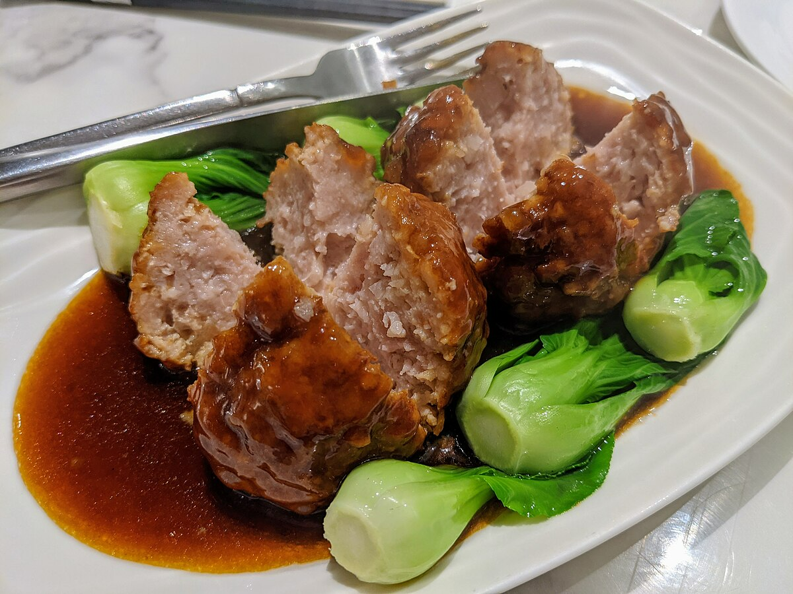

中餐 Chinese Cuisine
With a long history, unique features, numerous styles, and exquisite cooking, Chinese cuisine is one of the important constituent parts of Chinese culture. Chinese traditional dishes are famous for their color, aroma, taste, meanings, and appearance.
As China is a huge country, there are many regional differences in cuisine due to differing climates, history, local ingredients, dining customs, etc.
According to the cooking styles and regional flavors, Chinese cuisines can be divided into eight Chinse cuisines, which include Sichuan Cuisine, Hunan Cuisine, Shandong Cuisine, Zhejiang Cuisine, Fujian Cuisine, Anhui Cuisine, Cantonese Cuisine, and Jiangsu Cuisine. Each cuisine has its popular dishes.
粤菜 Cantonese (Guangdong) Cuisine
Cantonese cuisine is welcomed by people around the world and is the representative Chinese cuisine. The cooking methods of Cantonese dishes are always complex, flexible, exquisite, and creative. Most Cantonese dishes taste mild and fresh, preserving the natural taste of food materials. The food materials are extremely rich which include poultries, birds, sea food, land animals and various vegetables and fruits.
点心 Dim Sum
A variety of small dishes like dumplings, buns, and spring rolls, traditionally served with tea. Dim sum is one of the most popular Cantonese cuisine dishes. It contains a large range of small dishes, including dumplings, rolls, cakes, and meat, seafood, dessert, and vegetable preparations. Dim sum originated in Guangzhou city. People of Guangdong are fond of drinking tea in the morning or lunch. So, they often eat dim sum during their tea parties for breakfast and lunch. It is a popular way to get together with friends and relatives or have social gatherings.
叉烧 Char Siu
Barbecued pork with a sweet and savory glaze. It is a kind of Cantonese roast pork. It is eaten with rice or noodles. It is also used as a filling in baozi (a kind of steamed stuffed bun). Photo by smuconlaw on flickr.
馄饨汤 Wonton Soup
Wontons are a kind of Chinese dumplings in a light broth with vegetables and sometimes meat. Wonton fillings are sometimes minced pork or diced shrimp. Wontons are commonly boiled and served in a soup (broth), but sometimes deep-fried. Photo by Alpha on flickr.
四川美食 Sichuan Cuisine
Originated in Southwest China, Sichuan cuisine is the most popular cuisine in China. Sichuan dishes are famous with its spicy, pungent and hot flavor and red color. Sichuan chefs prefer seasonings like various pepper and chili, garlic and broad bean paste which is the soul of Sichuan dishes. Hot Pot is the most popular Sichuan dish in China and is the first choice when dining together with friends.
麻婆豆腐 Ma Po Tofu

Ma Po Tofu is one of the most famous dishes in Chuan Cuisine (Sichuan food) with a history of more than 100 years. It consists of beancurd along with some minced meat (pork or beef) in a spicy sauce. The sauce is made from fermented black beans and chili paste (douban/douchi).
The inventor of Ma Po tofu was from Chengdu, Sichuan province. She was a grandma whose surname was Chen. It is said that Chen's face was very pockmarked. In Chinese, ma means 'pockmarked' and 'po' means grandma, and so people called the dish she made Ma Po ('Pockmarked Granny') tofu. Her spicy and fragrant dish later became a highly popular item. It was introduced to Japan and also became a popular dish there.
宫保鸡丁 Kung Pao Chicken
Kung Pao Chicken is a famous Sichuan-style specialty, popular with both Chinese and foreigners. The major ingredients are diced chicken, dried chili, cucumber, and fried peanuts (or cashews).
People (Chinese takeaways) in Western countries have created a Western-style kung pao chicken, for which the diced chicken is covered with cornstarch, and vegetables, sweet and sour sauce, and mashed garlic are added.
火锅 Hot Pot

Hot pot is one of the most popular dishes in China, especially in Sichuan Province or Chongqing. People cook in and eat from a simmering pot of soup stock (broth) on a gas/induction hob in the middle of the dining table with foodstuffs and condiments around the pot. People can add and cook whatever they like in the broth. The secret of whether a hot pot is good or not lies in the broth, which all the meat slices and vegetables take their flavor from.
Chinese people are very fond of hot pot. In the past hot pot used to be favored only in winter, but nowadays hot pot has been appearing on tables all year round. It is a great way to socialize with friends and relatives. People gather around the pot to eat while chatting, eating, drinking, and having fun.
鲁菜 Shandong Cuisine / Lu Cuisine
Originated in the Spring and Autumn Period (770 - 476 BC), Lu cuisine is the only self-originated cuisine among 8 Chinese cuisines which has the longest history of 2,500 years, hence seen as the No. 1 of 8 great cuisines of China. Shandong dishes pay much attention to the quality and natural taste of food. Soup and scallion are key seasonings and sea food plays a crucial role in Shandong cuisine. Most Shandong dishes taste fresh, umami and moderately salty.
Notable Shandong Dishes: Sweet and Sour Carp, Braised Sea Cucumber with Scallion, Braised Intestines in Brown Sauce, Braised Prawns in Oil, Steamed Stuffed Tofu, Dezhou Braised Chicken, Caramel Sweet Potato, Omelet Chicken Slices, Four Joy Meatballs…
糖醋鱼 Sweet and Sour Fish
Sweet and sour carp is bright red and tastes sweet, sour and crispy outside. It seems that the carp is splashing higher, which is an auspicious sign in China.
蒸酿豆腐 Steamed Stuffed Tofu
The diced tofu is stuffed with various chopped vegetables and cooked with soup. It is snow white in color and tastes extremely smooth, umami and tender.Photo by Alfa on flickr.
饺子 Dumplings
Dumplings are a traditional food type that is widely popular, especially in North China. Chinese dumplings consist of minced meat and/or chopped vegetables wrapped in a thin dough skin. Popular fillings are minced pork, diced shrimp, ground chicken, beef, and vegetables. Dumplings can be cooked by boiling, steaming, or frying.
Dumplings are also a traditional dish eaten on Chinese New Year's Eve. As they look like Chinese silver ingots (Chinese money in old times), it is believed that the more dumplings you eat during the New Year celebrations, the more money you will make in the New Year. Making dumplings is a good way to interact with your friends and relatives. You will see a busy kitchens with Chinese families making dumplings during Chinese New Year.
江苏菜, 苏菜 Jiangsu Cuisine / Su Cuisine
Jiangsu cuisine, the representative of South China food, is famous for its delicate appearance and lightly sweet, umami, natural and mild taste. Jiangsu dishes preserve much original flavor of food materials. The main food materials are mainly freshwater fishes, river fish and sea food. The cutting is extremely exquisite and changeful and the control of heat is precise. The dishes are always served delicately.
南京盐水鸭 Nanjing Salted Duck
The dish is also called osmanthus duck since it is often eaten when osmanthus bloom. The duck is first marinated with fried salt and then boiled in the brine made of ginger, scallion and other spices. Photo by Kirk on flickr.
红烧丸子 Braised Meatballs in Brown Sauce
It is also known as Four-Joy Chinese Meatballs or Lion’s Head Meat Balls. This Jiangsu cuisine recipe is to mix fat and thin meat with glutinous mushrooms and other materials to make the meat balls, fried and then braised.
扬州炒饭 Yangzhou Fried Rice
A Yangzhou staple food popular throughout China. The left rice are fried with eggs, carrots, green onion, corn, ham and so on, seasoned with a little soy sauce and salt. It is a convenient and easy staple food for beginners.
浙菜 Zhejiang Cuisine
Popular in Zhejiang, Zhejiang cuisine is often lightly seasoned with appealing appearance. Zhejiang cuisine chefs prefer fresh food materials like sea food, freshwater fishes, and vegetables in season and they are extremely strict in the selection of raw materials. In addition, Zhejiang cuisine is well-known for its varied cooking methods and frying is the most frequently used.
西湖醋鱼 West Lake Fish in Vinegar Gravy
Sweet and sour with a bright brown color, the fish is fresh and tender. As no oil are used to cook the fresh fish, the dish keeps the original flavor of fish.
东坡肉 Dongpo Pork
Dongpo Pork is braised with Shaoxing wine, soft and oily but not greasy. It was named after its inventor, the famous poet Su Shi, also called Su Dongpo.
闽菜 Fujian Cuisine
Originated in Fuzhou in Fujian, Fujian cuisine dishes are light, fresh, mellow and non-greasy in general. The food materials used are pretty rich, containing both materials in land and seas. The common seasoning include red vinasse, sugar and vinegar. Like Jiangsu cuisine, Fujian cuisine attaches great importance to cutting techniques as well.
佛跳墙 Buddha Jumps Over the Wall
Buddha Jumps Over the Wall is the best Fujian food recognized by many. It is stewed for over 10 hours with 28 main ingredients, like abalone, sea cucumber, shark's fin, fish belly, fish lip, tendon, ham, scallops, mushroom, etc. There was a poem said that the charming aroma would attract the Buddha to give up his vegetarianism, thus it was named as Buddha Jumps over the Wall.
荔枝肉 Sweet and Sour Litchis
Sweet and Sour Litchis is a famous Fujian dish having a history of 300 years or so. The ingredients include thinly diced pork, white water chestnuts, starch, red vinasse, sugar and vinegar. The finished dish looks like litchis in the appearance, hence the name. Now, many restaurants often use diced potato instead of water chestnuts.
福州鱼丸 Fuzhou Fish Balls
Fuzhou Fish Balls are one of the best Fujian food made with local seafood. The mixed dough of minced eel or mackerel and starch is shaped into small balls stuffed with minced pork or shrimp and boiled. They are white similar in size to walnuts. Only a little salt and some chopped shallots are needed for seasoning and the dish tastes umami with a fresh seafood flavor.
湘菜 Hunan Cuisine / Xiang Cuisine
Originated in Eastern Zhou Dynasty (770 - 256 BC), Hunan cuisine, also Xiang cuisine, is another cuisine popular throughout China with the spicy taste. Hunan dishes are even hotter and spicier than Sichuan cuisine since they have even more dried or fresh chili in dishes. Hunan people also invent sour and spicy taste and numb and spicy taste, and they like pickled and preserved vegetables and meats very much.
剁椒蒸鱼头 Steamed Fish Head with Chopped Chili
This famous Hunan cuisine dish is spicy with tender fish meat. The fish head is from bighead carp. In addition to chopped chili, soy sauce, ginger, shallot, garlics are added as condiments. Photo by 羽諾 YUNO on flickr.
毛主席的红烧肉 Chairman Mao’s Red Braised Pork
This is one of Chairman Mao's favorite dishes. It has a complicated taste of spicy, salty and sweet, with a dark red color in appearance. The pork should be half fat and half lean, and is cut into big dices evenly. Photo by Ewan Munro on flickr.
长沙臭豆腐 Changsha Stinky Tofu
Although Changsha Stinky Tofu smells unpleasant, it is extremely delicious with aromatic and spicy taste. The hard surface is crispy, and the inside is flavorful with sauce.
徽菜 Anhui Cuisine / Hui Cuisine
Popular in Anhui Province, Hui dishes taste salty, fresh, and light and have the unique flavor of ingredients. Hui cuisine attaches importance to dietetic invigoration with natural ingredients. It is worth noticing that Anhui cuisine dishes have the effect of nourishing body for multiple ingredients with varied nutrition are matched scientifically.
文正山笋焖 Stewed Bamboo Shoots of Wenzheng Mountain
The bamboo shoots are from Wenzheng Mountain in southern Anhui. It tastes salty and a little sweet. Hams and mushrooms added improve the taste and aroma to make the dish more attractive.Photo by Joi Ito on flickr.
梅菜扣肉 Braised Pork with Preserved Vegetables
Pork slow-cooked with preserved vegetables. Photo by Alpha on flickr.
其他受欢迎的中国菜 Other Popular Chinese Dishes
北京烤鸭 Peking Duck
Peking duck (北京烤鸭 Běijīng kǎoyā) is a famous dish from Beijing, enjoying world fame, and considered as one of China national dishes. Peking duck is savored for its thin and crispy skin. Sliced Peking duck is often eaten with pancakes, sweet bean sauce, or soy sauce with mashed garlic. It is a must-taste dish in Beijing!
As "the first dish to taste in China", Beijing Roast Duck used to be a royal dish in medieval China. It has been a "national dish of diplomacy" since the 1970s, when it was first used for the reception of foreign guests by Premier Zhou Enlai (the first Premier of the People's Republic of China). It is highly praised by heads of state, government officials, and domestic and foreign tourists. Photo by Steven Miller on flickr.
春卷 Spring Rolls
Crispy rolls filled with vegetables, meat, or seafood, often served as an appetizer.
咕噜肉 Sweet and Sour Pork
Sweet and sour pork has a bright orange-red color, and a delicious sweet and sour taste. At the very beginning there was only sweet and sour pork, but to meet demands, there have been some developments on this dish. Now, the pork can be substituted with other ingredients like chicken, beef, or pork ribs.
炒饭 Fried Rice

Fried rice is a dish made from fried cooked rice and other ingredients, often including eggs, vegetables, seafood, or meat. Fried rice is one of the most common Chinese foods. It is easy to make fried rice at home using leftover rice and other meat or vegetables from the last meal.
It was said that an important diplomatic official in the late Qing Dynasty (1644–1912), Li Hongzhang, ordered his chef to cook a dish that both Chinese people and foreigners would like. The chef made fried rice, which was enjoyed by both the foreign guests and officials. The most famous fried rice in China is Yangzhou fried rice.
茶 Tea
China is known for its diverse tea varieties, including green tea, black tea, oolong tea, and white tea. The Chinese tea ceremony is a traditional practice that emphasizes the art of tea preparation and appreciation. It often involves specific rituals and the use of elegant tea ware.
Chinese cuisine is a reflection of the country’s rich cultural heritage and diverse regional traditions. From the spicy dishes of Sichuan to the delicate flavors of Cantonese cuisine, each region offers a unique culinary experience. The variety and depth of flavors, along with the cultural significance of the dishes, make Chinese cuisine a fascinating and integral part of China’s cultural identity.